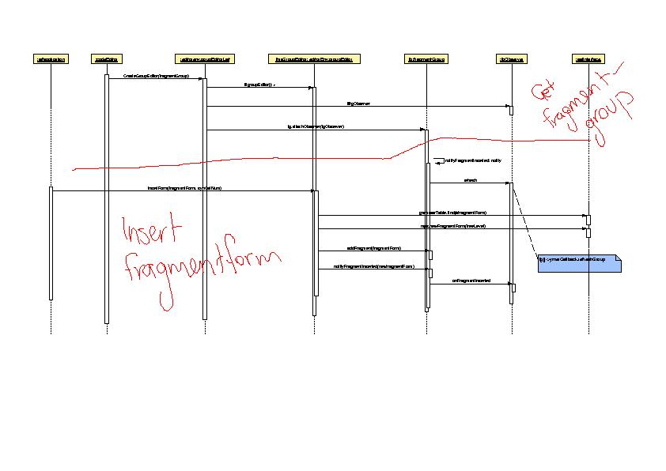
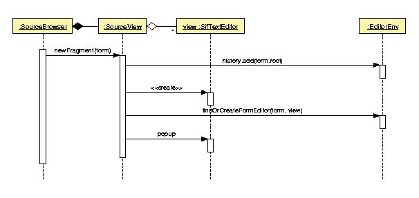
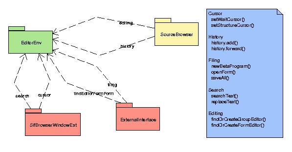

Betamøde om arkitektur af Mjølnersystemet

Torsdag d.11.oktober 2001, kl.14.15
Til stede: ESS,KFJ,HML,(MBE (frøs beta)),MEJ,KSJ
Referent: MEJ
Dato for næste møde: Torsdag d. 25. oktober 2001, kl. 14.15.
Referat
1. KFJ's sekvensdiagram for NewFragment
MEJ udleverede en håndtegnet udgave af ESS's diagram, som var checket
og kompletteret v.h.a. betakoden.

(pdf, xml)
Sekvensdiagrammet handler om at indsætte en ny fragmentform, men
for at kunne det, skal man bruge en GroupEditor, så diagrammet starter
"et skridt længere ude" med oprettelsen af GroupEditor.
Refresh'et er sådan set godt nok, men spørgsmålet
er, om der er flere observere, der griber den samme notification og derfor
også giver sig til at kalde frem til UpdateBrowser osv. Grov skitse
over filer/fragmenter vi fulgte for at finde ud af hvor det sker:
-
mps/notifications.bet
-
editor/private/fgObserverBody ...
-
sifBrowserWindowExt: et stykke inde i partobjects i partobjects: "refreshGroup"-patternet
kalder UpdateBrowser
-
->YmerInterface
-
-> YmerBody: --UpdateBrowser--
HML: AddToUseGroups (i SourceBrowserBodyExt: --SelectFragmentGroup-- )
opdaterer også treeviewet med "brugte filer"
Problemet med de mange updates kan reproduceres ved først at
sige Copy Fragment Form og dernæst Paste Fragment Form.
2. Navngivning i delmængden "Sif og Ymer"
I et forsøg på at lave uniform navngivning gennemgik vi Sif/editor-
og Ymer/sourcebrowser-klasserne for at finde ud af hvad de hver især
gør. Fra nu af hedder Sif 'editor' og Ymer hedder 'sourcebrowser'.
Flg. bør dog checkes med FGC før ændringer sættes
i værk.
-
SourceBrowser,YmerSourceBrowser og BrowserType er gui- (eller view-) delen
af sourcebrowser. De kan således kaldes noget i retning af 'sbGui'.
Hvad adskiller dem?
-
YmerBrowserInterface,YmerYmerBrowserInterface og YmerBrowserWindow er controller-delen
af sourcebrowser. De kan derfor respektivt kaldes SourceBrowserInterface,
SourceBrowserInterfaceImpl og SourceBrowserWindow.
-
YmerEnvInterface, Yi og YmerEnv udgør noget environment, som SourceBrowser
har brug for. Det kan kaldes sbEnvInterface, sbEnvInterfaceImpl og sbEnv.
(MEJ: hvorfor har env. brug for et interface (som f.eks. SifApplication
har en pointer til)?).
-
SifInterface -> EditorInterface, ExternalInterface -> EditorInterfaceImpl,
SifApplication-> EditorApplication
ESS: YmerCalls vigtigste funktion er at være CodeEditors interface
til sourcebrowser.
3. HML om sammenlægning af EditorEnv og SifBrowserWindowExt

(pdf, xml)
Først en rettelse til Sif/Ymer-klassediagrammet fra d.28. sep.:
ExternalInterface er partobject i SifBrowserWindowExt og ikke i SifApplication.
HMLs konklusion på undersøgelser: EditorEnv kan godt flyttes.
Men i stedet for at slå SifBrowserWindowExt og EditorEnv sammen,
er der mere brug for at rede ud hvordan SifBrowserWindowExt (SBWE) og SourceBrowser
(SB) interface'er til hinanden; tilsyneladende har SBWE brug for et interface
til SB, mens SB i mindre grad har brug for et interface til SBWE. SBWE
er Sif's måde at få adgang til SB, da det er her, YmerCall
er bundet.

(pdf, xml)
4. Lektier
KFJ kigger nærmere på detaljerne nede i denne dybde og forsøger
at lokalisere multiple refreshes.
MEJ færdiggør forslag til navneændringer og checker
med FGC om det er kohærent med klassernes egentlige brug.
HML kigger mere på SifBrowserWindowExt og dens rolle i SifApplication
m.h.t. interfaces.